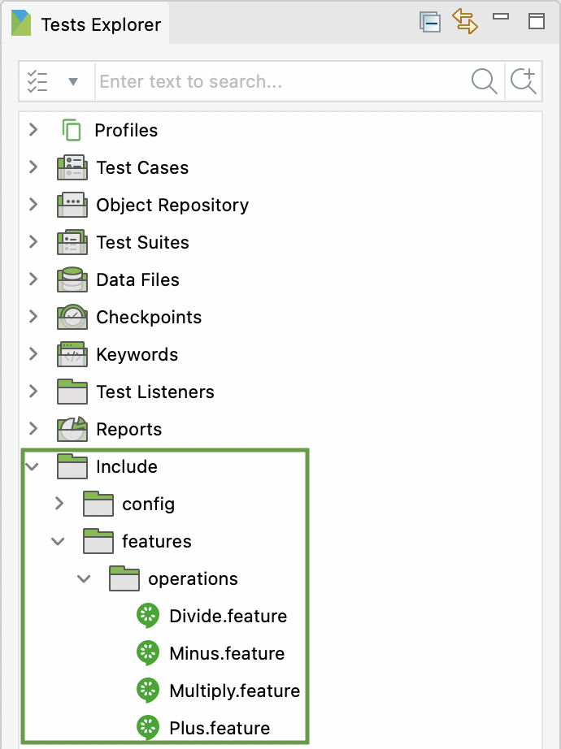

Add Feature Files in Katalon Studio
Features File is located within Include/features folder from your project folder and can be seen from Tests Explorer:

The content of Features File follows BDD conventions: Given, When, Then. When creating a new Features File, there is an option to Generate sample Feature template, which generates a sample template for your Features File. This option ensures that the created Features File matches with BDD convention, so that you will reduce efforts in creating Features File in the correct format.

Let's look at an example of Katalon Demo Cura System: https://katalon-demo-cura.herokuapp.com/. We want to test the Login feature with a valid and invalid credential, so the content will be something like this:

Using tags is a good way to organize features and scenario. A feature or scenario can have multiple tags.
Sample Features File
#Author: your.email@your.domain.com
#Keywords Summary :
#Feature: List of scenarios.
#Scenario: Business rule through list of steps with arguments.
#Given: Some precondition step
#When: Some key actions
#Then: To observe outcomes or validation
#And,But: To enumerate more Given,When,Then steps
#Scenario Outline: List of steps for data-driven as an Examples and <placeholder>
#Examples: Container for s table
#Background: List of steps run before each of the scenarios
#""" (Doc Strings)
#| (Data Tables)
#@ (Tags/Labels):To group Scenarios
#<> (placeholder)
#""
## (Comments)
#Sample Feature Definition Template
@Login
Feature: Login Feature
As a user, I want to login to Cura System
so that I can make an appointment.
@Valid
Scenario Outline: Login with a valid credential
Given I navigate to Cura System homepage
When I click Make Appointment button
And I enter username <username> and password <password>
And I click Log in button
Then I should be able to login successfully
Examples:
| username | password |
| John Doe | ThisIsNotAPassword |
@InValid
Scenario Outline: Login with an invalid credential
Given I navigate to Cura System homepage
When I click Make Appointment button
And I enter an invalid username <username> and password <password>
And I click Log in button
Then I should NOT be able to login successfully
Examples:
| username | password |
| Jane Doe | ThisIsNotAPassword |